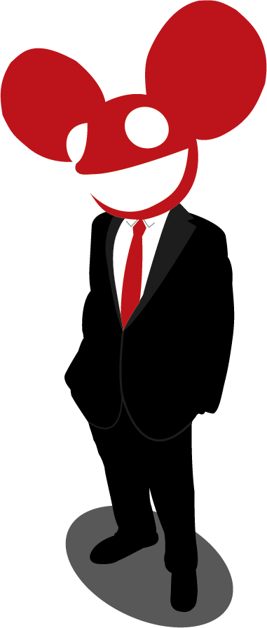

producer, performer, man, mau5 <:3)~~
Upcoming Events
- CE Centre, Ottawa, ON (unhooked)
- Prairieland, Saskatoon, SK (unhooked)
- Shaw Conference Center, Edmonton, AB (unhooked)
Joel Thomas Zimmerman (born January 5, 1981), better known by his stage name deadmau5 (pronounced "dead mouse"), is a Canadian progressive house and electro house producer based in Toronto.
His tracks have been included in compilation albums such as In Search of Sunrise 6: Ibiza, MixMag's Tech-Trance-Electro-Madness (mixed by deadmau5 himself), and on Armin van Buuren's A State of Trance radio show. His debut album, Get Scraped, was released in 2005, followed by others in the next few years.
As well as his own solo releases, deadmau5 has worked alongside other DJs and producers, such as Kaskade, MC Flipside, Rob Swire of Pendulum, Skrillex, Bighorse and Steve Duda under the BSOD alias. He is known for often performing in a titular costume head, which resembles a mouse head that he originally created while learning to use a 3D program. The costume mouse head Zimmerman wears at concerts, called the "mau5head" appears in many different colors and designs, and has been shown on the cover of most of Zimmerman's albums, with the exceptions of At Play and Vexillology.*